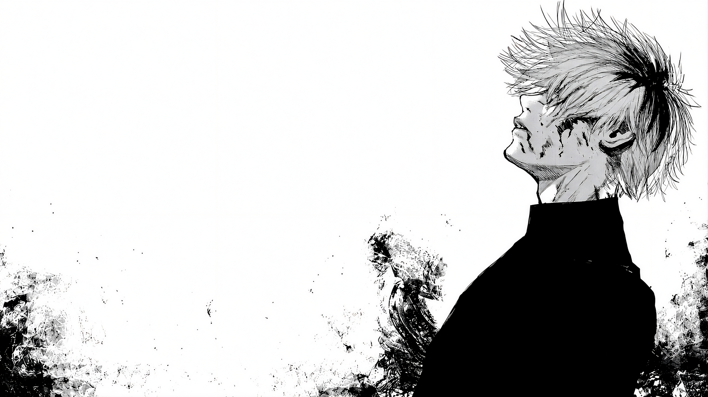

Kaneki es un personaje de la serie de manga y anime "Tokyo Ghoul". Es un joven estudiante universitario que se convierte en un ghoul después de un encuentro con un ghoul llamado Rize Kamishiro. A lo largo de la serie, Kaneki lucha por mantener su humanidad mientras se adapta a su nueva vida como ghoul.